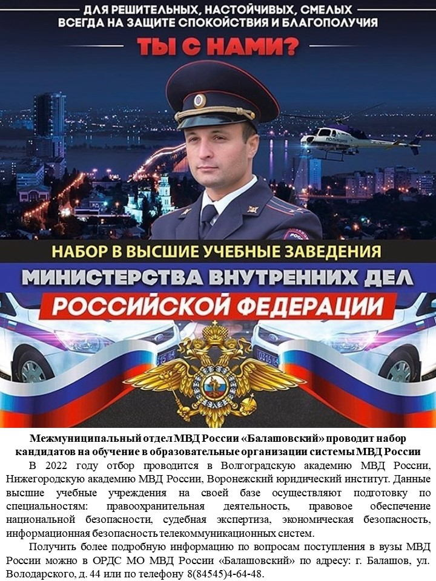
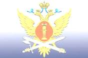

Астраханское суворовское военное училище МВД России осуществляет набор на обучение по общеобразовательным программам несовершеннолетних граждан мужского пола, обучающихся в восьмом классе.
В училище со сроком освоения основных общеобразовательных программ, интегрированных с дополнительными общеразвивающими программами, 3 года могут поступать несовершеннолетние граждане мужского пола, окончившие в году поступления 8 классов по программе основного общего образования в организации, осуществляющей образовательную деятельность, годные по состоянию здоровья.
Основная цель деятельности училища – подготовка обучающихся к службе в органах внутренних дел Российской Федерации (в полиции) и поступлению на обучение в образовательные организации высшего образования МВД России.
Просим рассмотреть вопрос об оказании поддержки училищу в работе по информированию потенциальных кандидатов на обучение и их родителей (законных представителей) о своей деятельности.
Получить всю интересующую информацию о поступлении и задать вопросы можно по тел.: 8 (8512) 59-14-63 – телефон горячей линии приемной комиссии; 8 (8512) 35-12-11 – группа кадров отдела по работе с личным составом; эл. почта: asvu@mvd.ru
YouTube канал: astrasvumvd
Межмуниципальный отдел МВД России «Балашовский» проводит набор кандидатов на обучение в образовательные организации системы
МВД России
Служба в органах внутренних дел накладывает на сотрудников большую ответственность, и потому подготовка профессиональных, грамотных, высоконравственных кадров – одна из важнейших задач образовательных учреждений МВД.
Деятельность по подготовке профессиональных кадров для МВД осуществляется в ведомственных университетах, академиях, институтах, суворовских военных училищах Российской Федерации.
Межмуниципальный отдел МВД России «Балашовский» Саратовской области проводит отбор юношей и девушек, годных для прохождения службы по состоянию здоровья (категория А-Б), морально-деловым качествам, уровню образования для дальнейшего направления на целевое обучение на очных бюджетных отделениях высших образовательных организаций системы МВД России.
В настоящее время отбор проводится в Волгоградскую академию МВД России (г. Волгоград), Нижегородскую академию МВД России (г. Нижний Новгород), Воронежский юридический институт (г. Воронеж). Срок обучения 5 лет. Данные высшие учебные учреждения на своей базе осуществляют подготовку по специальностям: правоохранительная деятельность, правовое обеспечение национальной безопасности, судебная экспертиза, экономическая безопасность, информационная безопасность телекоммуникационных систем.
Получить более подробную информацию по вопросам поступления в вузы МВД Российской Федерации можно в отделе по работе с личным составом МО МВД России «Балашовский» по адресу: г. Балашов, ул. Володарского, д. 44 или по телефону 8(84545)4-64-48.
Пресс-центр МО МВД России «Балашовский»
Поволжский институт (филиал) ФГБОУ ВО "Всероссийский государственный университет юстиции (РПА Минюста России) приглашает 17 декабря 2021 года родителей и абитуриентов на День открытых дверей, который состоится в дистанционном формате. Подробнее
Санкт-Петербургский государственный морской университет приглашает выпускников на обучение. Плакат
ФКУ Тюрьма УФСИН России по Саратовской области приглашает выпускников на обучение по программам бакалавриата и специалитета. Подробнее в следующем видео.
Федеральное государственное бюджетное военное образовательное учреждение высшего образования «Академия гражданской защиты МЧС России»
Информационный материал о Академии
Лечебное исправительное учреждение № 3 Управления Федеральной службы исполнения наказаний по Саратовской области осуществляет набор кандидатов на очное обучение в ведомственные учебные заведения на 2021год (Самарский юридический институт ФСИН России, Академию ФСИН России (г. Рязань), Воронежский институт ФСИН России) для получения высшего профессионального образования.
Принимаются юноши, имеющие среднее общее образование или среднее профессиональное (после окончания училищ и техникумов), возраст от 17 до 25 лет, годные по состоянию здоровья и физической подготовке, успешно сдавшие экзамены.
Срок обучения (4-5 лет) засчитывается в стаж службы, после окончания учебного заведения присваивается звание «Лейтенант внутренней службы».
Курсантам выплачивается стипендия в размере до 15000 рублей ежемесячно, предоставляется общежитие, а также они обеспечиваются бесплатным питанием и обмундированием.
После окончания учебы гарантированно поступают на службу в учреждения ФСИН России и на время службы освобождаются от призыва в армию.
По всем вопросам обращаться в отдел кадров по адресу: Саратовская область, г. Балашов, Саратовское шоссе, 1, тел: +7 (84545) 6-32-79, 6-32-59 (с 8.00 до 17.00).
Выбор профессии – один из главных жизненных выборов, который стоит перед человеком. В рамках «Недели профориентации» у учащихся 7 – классов была возможность окунуться в виртуальный мир профессий.
Ребятам было предложено на выбор познакомиться с разными профессиями. Некоторым было трудно выбрать, т.к. еще не все определились, кем хотят стать. Но многие, как правило, делали упор на свои интересы, склонности.
Например, кадет 7Б класса Ларионов Дмитрий, выбрал профессию программиста. Почему? Об этом он расскажет сам: «Профессия программиста привлекала меня с раннего детства, ведь работники этой профессии пишут программы для роботов, создают игры и многое другое. Эта профессия на данный момент является высокооплачиваемой, и даже, если вы потеряете работу, то можете просто начать программировать от своего лица, создавать, например, свои игры»
С 14 по 23 ноября 2020 года в Cаратовской области в рамках проекта по ранней професcиональной ориентации школьников 6-11 классов «Билет в будущее» состоится «Фестиваль профессий» в дистанционном формате.
Подробная инструкция для записи на мероприятие Фестиваля, которое называется мини-пробы «Онлайн try-a-skill»по ссылке: http://bilet-help.worldskills.ru/
{kind=link}
{kind=link}
{kind=link}
{kind=link}
{kind=link}
{kind=link}
{kind=link}